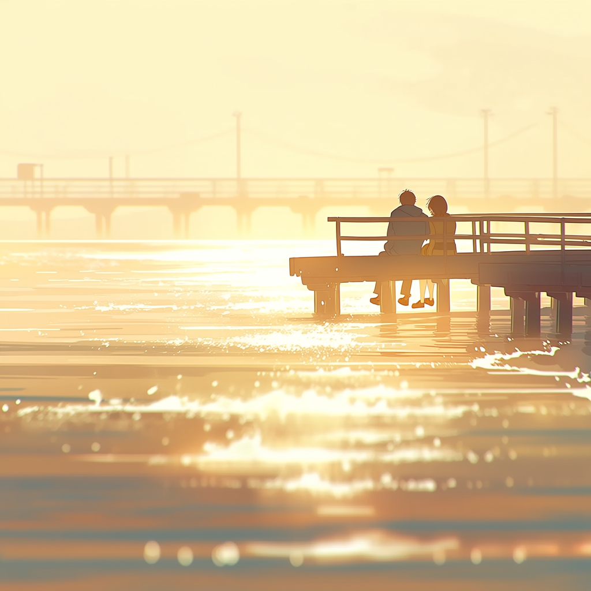
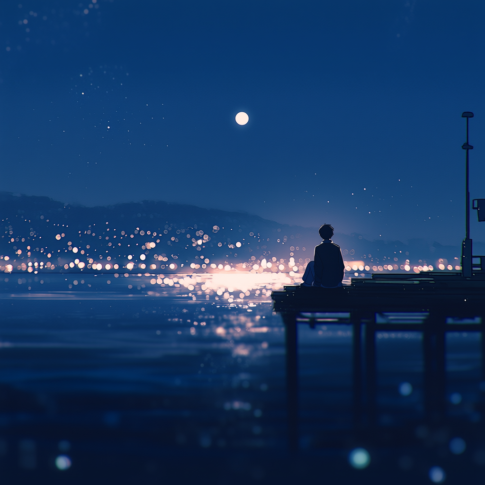
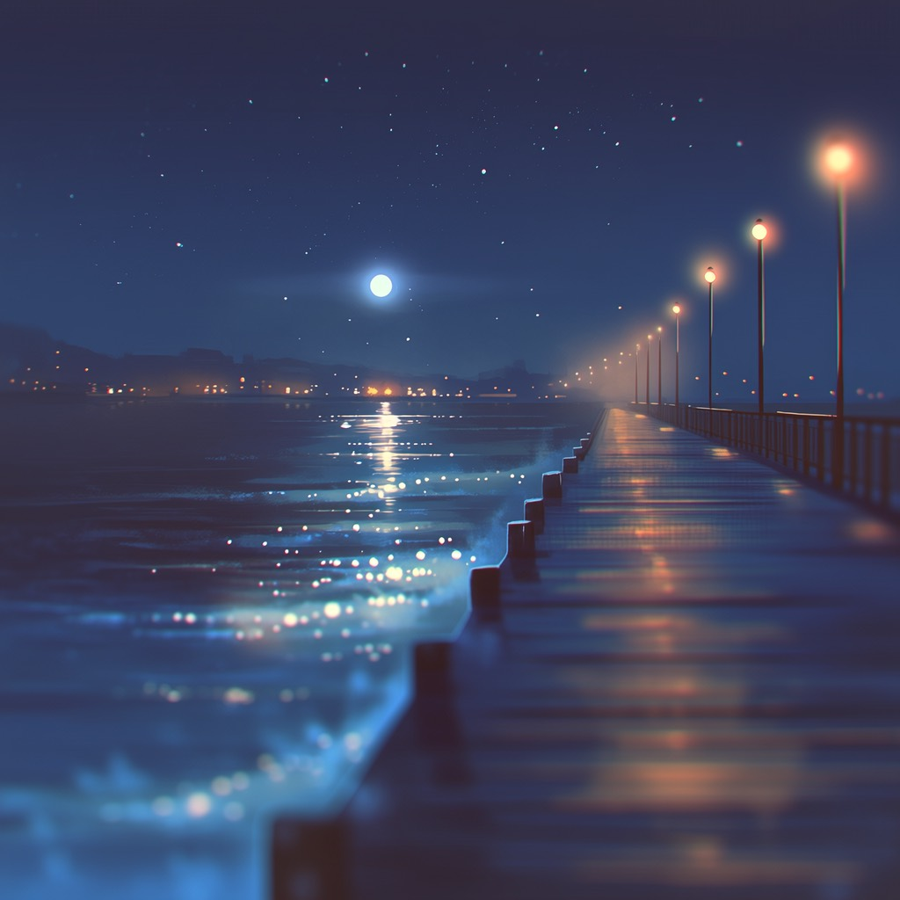

Dawn

First light on the boards
Reflection

Still water, long thoughts
Always

The walk back to the end
Our Story
Horizon Pier is where the day loosens its grip. Morning light on the railings, salt in the air, the sound of water below your feet. No spectacle. No rush. Just a place made for arriving, lingering, and coming back.
At the end of the pier, the horizon does what it has always done:
it gives the day somewhere to go.